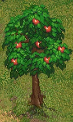

Place for the apple tree
| Place for the apple tree | |
|---|---|
 | |
Basic information
| |
Required Technology :
|
Transplanting |
Related pages :
|
Farming |
Location(s)
| |
| Orchard | |

The place for the apple tree will allow you to plant an apple tree in the orchard for a readily available source of red apples. Apple seedlings can be obtained from Clotho, the witch in the swamp.
Cost
 Orchard Orchard
| |||
|---|---|---|---|
| Icon | Materials Required | Energy | Notes |

|
1× Tree apple seedling 3× Peat 2× Wooden stick |
Requires: Transplanting | |
| ||||||||